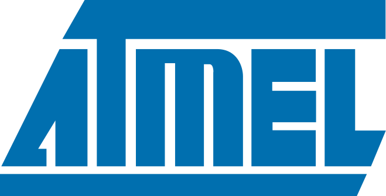
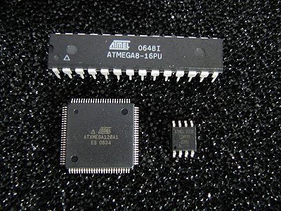

Коротка інформація
Апаратна частина
Плата Arduino складається з мікроконтролера Atmel AVR, а також елементів обв’язки для програмування та інтеграції з іншими пристроями. На багатьох платах наявний лінійний стабілізатор напруги +5В або +3,3В. Тактування здійснюється на частоті 16 або 8 МГц кварцовим резонатором. У мікроконтролер записаний завантажувач (bootloader), тому зовнішній програматор не потрібен. Процесорна плата Ардуіно (внизу) з платами макетування (зверху) Мініатюрна процесорна плата Arduino без встановлених деталей На концептуальному рівні усі плати програмуються через RS-232 (послідовне з’єднання), але реалізація даного способу різниться від версії до версії. Новіші плати програмуються через USB, що можливо завдяки мікросхемі конвертера USB-to-Serial FTDI FT232R. У версії платформи Arduino Uno як конвертер використовується контролер Atmega8 у SMD-корпусі. Дане рішення дозволяє програмувати конвертер таким чином, щоб платформа відразу розпізнавалася як миша, джойстик чи інший пристрій за вибором розробника зі всіма необхідними додатковими сигналами керування. У деяких варіантах, таких як Arduino Mini або неофіційній Boarduino, для програмування потрібно підключити до контролера окрему плату USB-to-Serial або кабель. Плати Arduino дозволяють використовувати значну кількість виводів мікроконтролера як вхідні/вихідні контакти у зовнішніх схемах. Наприклад, у платі Decimila доступно 14 цифрових входів/виходів, 6 із яких можуть генерувати ШІМ сигнал, і 6 аналогових входів. Ці сигнали доступні на платі через контактні площадки або штирові роз'єми. Також існує багато різних зовнішніх плат розширення, які називаються «shields» («щити»), які приєднуються до плати Arduino через штирові роз'єми.
 
Програмне забезпечення
Інтегроване середовище розробки Arduino це багатоплатформовий додаток на Java, що включає в себе редактор коду, компілятор і модуль передачі прошивки в плату. Середовище розробки засноване на мові програмування Processing та спроектоване для програмування новачками, не знайомими близько з розробкою програмного забезпечення. Мова програмування аналогічна мові Wiring. Загалом, це C++, доповнений деякими бібліотеками. Програми обробляються за допомогою препроцесора, а потім компілюються за допомогою AVR-GCC. Програми Arduino пишуться на мові програмування C або C++. Середовище розробки Arduino поставляється разом із бібліотекою програм «Wiring» (бере початок від проекту Wiring, який дозволяє робити багато стандартних операцій вводу/виводу набагато простіше).
Версії плат:
- Arduino Uno (R3)
- Arduino Nano
- Arduino Micro
- Arduino Due
- LilyPad Arduino Board
- Arduino Bluetooth
- Arduino Diecimila
- RedBoard Arduino Board
- Arduino Mega (R3) Board
- Arduino Leonardo Board
- Arduino Robot
- Arduino Esplora
- Arduino Pro Mic
- Arduino Ethernet
- Arduino Zero
- Fastest Arduino Board